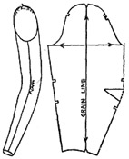

1942—Modern Pattern Design
by Harriet Pepin
Chapter 4—Sleeve Patterns
Analysis for Need of Control
In previous chapters you have learned the value of the use of basic control in shaping the bodice patterns. In the study of sleeves in which you are now engaged, you will learn that this same principle is utilized to provide as close a fit as possible with no lack of freedom.
Fig. 1 shows the natural shape of the human arm. In addition to being cylindrical in shape, it is also naturally bent at the elbow and tapers at the wrist. This means that the back of the arm will require additional fabric because it is longer than the front. So we provide that extra length in that area with the aid of the dart from the elbow position to the outer edge of the pattern.
Fig. 2 shows another important point in shaping a pattern for the sleeve. Where the arm joins the body (see point A), there is a rounded curve for which some control must of course be provided. As this curve is not intense, and extends from the front over the shoulder to the back, it is best handled with gathers, or "ease" through that area. In some style sleeves, this curve is accented, and additional fullness is provided, but for the time being, we are merely interested in the simple, basic set-in sleeve. Various sleeve designs follow later.
Fig. 3 shows how the flat pattern should look to provide proper length where needed. The fabric must enclose the curved arm and it must also permit movement at the elbow and shoulder. Intersecting lines A-B and F-E are grain lines. Notches are placed at A and B so one automatically records the position of this grain line when tracing around the sloper. The horizontal grain line F-E intersects at right angles and rests at base of sleeve cap.
The front folding line (broken line) indicates where the fabric will rest at the front of the arm when sleeve is being worn. Point P, at the lower point of this dotted line falls at the base of thumb as shown in Fig. 1.
The back folding line (broken line) represents the back of the sleeve, when it is on the arm. Point O, which is the point of the dart, indicates the elbow position. Point Q falls at little finger position as shown in Fig. 1.
The lines E-X and Y-U must equal the opposite side, F-T because, when the dart has been folded in, they must meet in a seam.
Point A at the top of sleeve cap joins the normal shoulder seam of the bodice and serves as a dividing point for distribution of ease in sleeve cap. In standard sizes the average amount of ease is 1 1/2 inches. Usually it is equally divided on each side of A. As individuals vary at this point, seam allowance should be generous to permit alterations. When an individual sloper is being fitted, the curved lines 2-A and 3-A are established in the final pattern after a trial fitting in muslin. Points 2 and 3 are usually located 6 inches from side seam in the bodice. They are then established in the sleeve pattern by measuring 6 inches upward from points F and E on the sleeve cap. When the sleeve is set—that portion is fitted smoothly to the bodice armscye. The excess from 2 to A and A to 3 is then adjusted in gathers to control the smooth fitting of the arm curve.
The seam of this simple sleeve falls in direct line with the underarm seam of the bodice. In our grandmother's day, most sleeves were so shaped as to place the seam to the front, permitting a closer fit through the biceps. However, modern women want more freedom and this sleeve is simpler to use in factory production, so is preferred today.
Drafting the Sleeve Sloper
Turn back to your bodice measurement chart on page 59 to find the sleeve measurements given for standard size 16. These may be used to study the method of procedure used for making a sleeve draft. It is advisable to read over the directions first, mentally completing each step before drawing any lines. Check over the following measurement points and the description given for each so that you may visualize the use of each when making a draft.
Measurement Points
The measurements given for sleeve drafts are based upon the ideally proportioned arm. They are the result of research work done by pattern makers in the manufacturing industry. The same method would be used to measure an individual.
Fig. 1 shows the basic points from which measurements are taken. These would be established by marking with chalk. They are, namely:
- A—Shoulder Tip Point
- B—Armpit
- C—Inside Wrist
- D—Back of Wrist, or Little Finger Position.
- E—Elbow Point (Used particularly when measuring individuals.)
Where Measurements are Taken
Fig. 2 shows just where measurements are taken. Notice that you have two vertical and two horizontal measurements. These are all that are needed to produce the draft for a standard size sleeve sloper.
1. Overarm Measurement: Taken from the Shoulder Tip Point, over the Elbow Point and down to the back of the wrist or Little Finger position. Arm should be bent as illustrated.
2. Underarm Measurement: This measurement is taken from the armpit to the wrist, with the arm hanging naturally.
3. Biceps Measurement: Taken in a position in line with the armpit. In standard sizes two inches have been added to provide some ease. When measuring individuals the arm may be measured exactly and then two inches added to the literal biceps measurement.
4. Wrist Measurement: Taken around the wrist exactly over the wrist joint. One inch is usually added to the exact wrist measurement to provide normal ease.
Select a piece of pattern paper 28 X 24 inches.
Have your square, tapeline, ruler, sharpened pencil and curve at hand.
Jot down the four basic measurements given for size 16 sleeve.
A-B—Start one inch below top edge of your pattern paper and draw the vertical line A-B down the center of the sheet. Make this line equal to the Overarm Length. Label points A and B.
B-C—From point B, measure upward a distance on this line equal to the Underarm Length and mark this point C.
D—Divide the line C-B equally and place a dot. Locate point D one-half inch above that dot.
C-E—From point C, square a line right which is equal to one-half Biceps Measurement. Label E.
C-F—From point C, square a line left which is equal to one-half Biceps Measurement. Label F.
F-C—plus C-E equals entire Biceps Measurement.
F-G—From point F, measure off a distance equal to one-fourth of line F-C and label point G.
E-H—From point E, measure off a distance equal to one-half line F-G. Label point H.
A-I—From point A on line A-C, square a line right equal to combined lengths of F-G and E-H. Label point I. Connect points I and H.
A-J—From point A, square a line left equal to twice length of line F-G. Mark point J. Connect points J and G.
D-K—From point D, square line right which is equal to C-E less 1/2 inch. Label point K.
D-L—From point D, square a line left which is equal to C-F less 1/2 inch. Label point L.
NOTE: The combined amounts deducted in the last two steps reduces the elbow one inch as compared to the biceps. This reduction is for the normal arm and might vary with individuals.
F-L—Connect points F and L.
E-K—Connect points E and K.
M—From point B, square a line to the right 1/2 inch long and mark this point M.
M-N—From point M, square a guide line downward which is 4 inches long. Label point N.
O—Divide the line D-K equally in halves and label point O.
M-P—From point M, extend the line M-B to the left a distance equal to one half the Wrist Measurement and mark that point P.
Q—Place your square on the points O and P as illustrated in Fig. 1. The corner of the square must rest somewhere on the line M-N. Place a dot at the exact corner of the square and label that dot Q.
Q-P—Connect points Q and P.
Q-O—Connect points Q and O.
R—Divide the line Q-P equally in half and mark the point R.
R-S is a guide line. Make it seven inches long, and make it parallel to line M-P.
P-T—From point P, measure a line equal to P-R to fall somewhere on the guide line. R-S. Mark point T.
L-T—Connect points L and T.
Q-U—Extend the line P-Q to the right, an amount equal to the distance from Q to R. Label point U.
K-U—Connect points K and U.
V—Subtract the length of the line F-L-T from the length of the line E-K-U. The difference represents the dart appearing at the elbow for control. Starting from K, measure off this distance and label point V.
O-V—Connect points O and V.
NOTE: When making sleeve drafts for various sizes from standard measurements, the difference in the biceps and wrist measurements may cause F-L-T to have an outward curve. It makes a more shapely sleeve if this seam is straight. This may be easily accomplished by straightening the line and then adding the amount which was lost to the back of the sleeve where the dart is located. The dotted lines in the diagram on the previous page illustrate the steps which follow.
W—Connect points F and T with a straight line. Label point W at the new intersection point.
X—Extend the elbow line W-O-K an amount equal to the distance between L and W. Label point X. Connect points E and X.
Y—Extend the line O-V until it is equal to the line O-X. Label point Y. Connect points Y and U.
The intersection of lines between X and Y represents the center of the dart.
Shaping the Sleeve Cap
You are now ready to shape the sleeve cap. In placing point J a greater distance from point A than point I was located from A, it results in a rounder curve at the front of the sleeve cap than that at the back of the sleeve. Some pattern makers make the two curves—front and back—identical. However, making an equal distribution requires more alterations when fitting sleeves to individuals. It is recommended that the proportion illustrated be used when making basic draft in standard sizes.
Read Each Step Carefully
Points 1, 2, 3 and 4 which appear on the sleeve draft are merely guide points for establishing a shapely, proportionate sleeve cap for standard size garments.
G-1—From point G, measure off a distance on the line G-J which is equal to the length of the line F-G. Label point 1.
J-2—From point J, on the line J-G, measure downward a distance which is equal to the length of the line J-A. Mark that point 2.
1-3—From point I, on the line I-H, measure downward a distance equal to the distance between A-I. Mark that point 3.
H-4—From point H, on the line H-I, measure upward a distance equal to the line H-E. Mark that point 4.
With the aid of your curve, placed in the positions illustrated in Fig. 1, establish clear, clean, curved lines between F and 1; 2 and the line J-A; E and 4; 3 and the line A-I. The top of the cap can follow the line J-I in the area of point A. It is not a good plan to make the top center of the cap too curved as the shoulder joint is a round shape and the width is needed around the top of the cap. Soften wrist with curve from T to R.
With blue pencil, trace around draft:
A-3-4-E-X-0-Y-U-Q-R-T-W-F-1-2-A.
Check your draft over carefully before allowing seams as given on next page.
Seam allowances for standard size sleeves are usually 3/4 inch on the sides and cap and 1/4 inch at wrist edge.
Some garment manufacturers allow extra seam allowance from 2 to A to 3 to provide for adjusting the length of the sleeve caps when alterations are necessary in stores. This is usually done in suits and better grade dresses.
Your cardboard sloper should be labeled as shown in Fig. 3, page 90. Make certain that the biceps and elbow lines are at right angles to the grain line and that each is labeled properly.
Personal Sleeve Slopers
When making a sleeve sloper for an individual, in most cases you will find, by checking the four measurements, that she will closely resemble some standard size which will conform to the size dress she would buy. By a few simple alterations, her sleeve sloper can be made. Unless the woman has an arm which is abnormal in shape because of certain flesh deposits, most alterations will be simple. When customers have abnormal bone structure, such as an extra long upper arm and a normal lower arm, or just the opposite, then the full set of measurements should be taken and a special draft made to those personal measurements. Usually, she will tell you her troubles with ready-to-wear garments and that will help you to decide the proper steps to take.
As in the case of making a bodice sloper, the muslin should be properly prepared before fitting is started. A blue vertical line should plainly mark the vertical grain line and another blue line should mark the horizontal grain line. See Fig. 1. Allow a full inch or more for seams and possible adjustments which may be necessary. The sleeve should be pinned together as shown in Fig. 2. In most cases, the designer is fitting the customer to a bodice at the same time as the sleeve. When the bodice has been properly fitted, the sleeve should be tested. Obviously, it would be impractical to attempt to fit a sleeve without the bodice muslin.
Points A and B are marked on the muslin proof with a single blue straight line in front and two lines in the back at a point 6 inches upward from the side seam of the bodice and a like position on the sleeve. (The area below A and B should be without ease.) In some cases, you will find that as much as 7 inches can be smooth, depending upon the amount of flesh deposit around the shoulder joint. It is best to make these points as high as possible and still maintain a good fit. It results in a smarter looking sleeve.
Figures 1 & 2 show the sleeve muslin prepared for fitting. Figures 3 & 4 show how the bodice armscye should be prepared to receive the sleeve. To make the curved edge of the armscye fold back smoothly, short slashes should be snipped at about one inch intervals. Points A and B should be marked with a straight blue line.
There are two special points of fitting a sleeve:
1. The sleeve cap, to permit freedom of the shoulder joint.
2. The elbow control, to permit freedom to bend the arm regardless of the shoulder.
The sleeve cap must be long enough to provide a smooth fit without excess fabric, but it must not be droopy. It must also be wide enough to actually enclose the entire arm, because if it is too narrow, it will stretch the bodice and not permit the entire garment to be comfortable.
More discomfort can result from improperly fitted sleeves than any other portion of a garment. Few dressmakers thoroughly understand just what constitutes a truly well fitting sleeve. Each of the above factors is considered individually and one has little to do with the other.
Fitting Sleeve Muslin
Your customer's arm should hang relaxed throughout this procedure, as far as possible.
Slip the sleeve muslin over the arm as shown in Fig. 1. Note that horizontal grain line is on a true horizontal. Likewise, the vertical grain line will be in a truly vertical position. Fig. 2 shows a common error found in hanging sleeves. This tips the sleeve too much to the back and will result in droopiness at the back of the cap when the arm hangs relaxed.
With the sleeve in the position shown in Fig. 1, pin it into that position temporarily regardless of the position of the shoulder seam of the bodice with relation to the blue vertical grain line of the sleeve.
Have customer raise her straight arm directly upward from the side and place a pin to attach the sleeve under the arm. Try and keep an equal portion of the biceps ease to the front and back when placing this pin.
Starting at the armpit, slip the raw edge of the sleeve cap under the folded edge of the armscye, removing the first pins as you insert the new ones. Fit the sleeve into the armscye smoothly up to, or beyond points A and B until the curve of the arm shows the need of ease.
Gently smooth the upper cap into the armscye, working in the direction shown by the arrows in Fig. 3. Keep customer's arm relaxed at side! You may note that, due to bone structure, or distribution of the flesh in upper arm, more fullness is needed to front than at back half of sleeve cap. Use some of the seam allowance of sleeve, if necessary, to provide a smooth, shapely cap. As you proceed, your muslin should look like that shown in Fig. 4.
Fig. 5 shows how it will look if you have pushed the cap in too much. Fig. 6 shows how it looks if sleeve cap is too long. Such errors result in complete loss of style in the garment.
So far, you have been fitting only the sleeve cap and the arm has been in the relaxed position. To test the width of the cap for muscular activity such as reaching, car driving, et cetera, place your hand on the other side of the bodice armscye in line with shoulder blades and ask your customer to keep her arm straight, but lift it forward. If you feel too tight a strain across the shoulders, widen the sleeve cap in the vicinity of point B. A very small amount, such as 1/8 inch may prove sufficient to provide the necessary ease with no loss in the smartness in fit.
Your next step is to check for sufficient elbow control to permit freedom of the arm itself. This is an entirely separate procedure from fitting the cap and checking the reaching width mentioned above.
 With upper arm close to her side, have customer bend her elbow
as seen in Fig. 7. Watch shoulder area as she does this. If it draws, as
shown
by arrows,
either the elbow dart is not exactly over the elbow, or there is not a large
enough dart to provide sufficient control. If the sleeve just binds at the
elbow, just release the seam in elbow area and test once more.
With upper arm close to her side, have customer bend her elbow
as seen in Fig. 7. Watch shoulder area as she does this. If it draws, as
shown
by arrows,
either the elbow dart is not exactly over the elbow, or there is not a large
enough dart to provide sufficient control. If the sleeve just binds at the
elbow, just release the seam in elbow area and test once more.
To increase elbow control, remove pins from wrist to elbow dart. Work the back of sleeve up gently, and re-pin seam and test again. When sufficient amount has been added, she should be able to bend her arm without causing the back of bodice to strain. Fig. 9 shows how corrected sleeve would appear. Dotted line shows original stitching line. Amount lacking at wrist shows amount added to elbow dart. Pin on a little piece of muslin and mark the new wrist line in red.
Modern factory methods require that sleeves have seams which fall in a true line with the underarm bodice seam in the basic slopers. Check the muslin on your customer and if necessary, correct the position of the underarm seam as shown in Fig. 10. Make a similar check at the shoulder and correct, if necessary, as shown in Fig. 3 on the previous page. These new basic seam positions should be marked in red pencil.
Completing Personal Sloper
Customer's sloper will now be made from this muslin fitting of bodice and sleeve. Remove muslin from customer with sleeve still pinned into position. Mark position of points A and B across armscye seam on bodice and sleeve with red pencil. This locates position of notches in patterns. Go over all darts, seams and other basic points with red pencil. If correction is made as shown in Fig. 10, "true" up all red sketched lines and cut bodice apart on red lines, leaving original seams still pinned. Cut away all excess remaining seam allowance outside of your red lines. Cut away dart areas. Press muslin without stretching. Pin muslin down to a piece of cardboard. Mark all grain lines and other identifying marks, such as notches, darts, et cetera, just as they appear in Fig. 3. Write customer's name and date fitting was made. This personal sloper may be the basis for all garments made for her in the future.
Students in classes like to test the perfection of any personal sloper by making an inexpensive, or muslin blouse which involves additional style features, such as added drapery, yokes et cetera. This might be a good plan until you have had experience in fitting several customers.
Fig. 11 shows a high style garment showing the use of a simple, close fitting basic sleeve. The ease which was provided above points A and B has been steamed out at the seam and the cap fits closely, yet provides the smartest possible fit.
Fig. 12 shows two supplementary measurements which may be taken on individuals. B is taken with arm closely bent to test required width provided by line L-K. A locates elbow height, or actual distance of point D from B on basic draft shown on page 91. These additional measurements can reduce need for muslin adjustments.
Variations of Elbow Control
The ease provided at the top of the sleeve cap, where it will meet the armscye of the garment is slight enough, in most fabrics, to be steamed out over a round pad in the final garment. When the fashionable silhouette calls for an exaggerated width at top of the sleeve, darts, gathers and seams are employed and extra length and width are inserted to produce the exaggerated silhouette. This will be illustrated in following diagrams.
As you found to be the case in the study of bodices, the basic control dart in the sloper must extend to the highest point of the curve being fitted. This is also true with regard to the elbow dart. But, it is equally true that the dart may be shortened in the final garment to provide extra elbow room as needed. The basic dart may also be replaced by several small short darts or gathers. Diagrams on this and previous page show method for making such changes.
You will notice that many ready-to-wear dresses show the elbow dart merely folded over without being stitched. The reason for this is obvious. Although the method does not produce a sleek, well fitted sleeve, it makes it more possible for many women to wear the dress without alterations. In higher priced garments, where expert cut and fit is expected, the darts are usually stitched into position but ample seam allowance is provided so that proper alterations may be made as needed.
The Folded Sloper
Another convenient supplementary sloper is made of brown kraft paper, with the control at the elbow. This is then folded in such manner as to appear as a fabric sleeve would when hanging on the figure. In other words, this new sloper when folded, represents the silhouette of the fitted sleeve. This sloper will prove most convenient when planning sleeves with width at the back and below the elbow. It provides speed in developing such patterns. Carefully study the diagrams shown above before proceeding.
Make a tracing of the elbow control sloper and cut out of heavy paper. Be sure the grain line is in place, with the biceps and elbow lines at right angles to it. Study carefully steps 1, 2, 3, and 4 as illustrated above. The shaded areas represent the under side of the sloper.
Step 1: Fold front of the sleeve pattern over to the grain line, so that the biceps remains at a perfect right angle to the grain line. Note this makes the front of the sleeve parallel to grain line.
Step 2: Fold area above elbow dart over to the grain line—again keeping the biceps at right angles to the grain line. Result: The back fold, down as far as the elbow, is parallel to grain line.
Step 3: Fold over remaining portion of sleeve below elbow dart so as to have lower wrist points meet. (Sections of the sleeve on either side of elbow dart may overlap at that point.)
Step 4: Unfold sloper and label front and back fold as illustrated. These folds represent the true front and back to the sleeve. Place one notch at the top of the front fold, two notches at the top of the back fold.
Shifting Control to Little Finger Position

As is the case in bodices, the basic control in sleeves may be shifted to another position and the sleeve still retain the original dimensions. A position which is preferred by many designers is that which starts at the wrist, at the back, in line with the little finger on the hand. Although the dart is longer than the elbow dart, it is the same size at a point equidistant from the elbow control point.
In the drawings above you will see illustrations showing the procedure used to shift the control to this little finger position. Note that when the control is at the elbow, the portion below the elbow dart is somewhat off grain. When the control is shifted to the wrist, the grain of the fabric in the back section straightens somewhat. Therefore, when a woman has a large biceps and elbow measurement and a small wrist and requires a generous amount of control, sleeves made with the little finger dart or with the control divided between the elbow and little finger position will be more shapely and comfortable to wear.
NOTE: Naturally, the seam allowances in the wrist dart will depend upon the manner of closing the sleeve. If the placket is to be placed at the back of the arm (where it is most pleasing in appearance), the allowance would be made accordingly. If the placket is to be in the basic sleeve seam on the inside of the arm, then it would be provided accordingly.
As you complete your sleeve muslins, pin them up against the model form by attaching the tip of the sleeve cap to the shoulder seam line. Every muslin should be traced to show the vertical and horizontal grain lines. Study the effect closely. It will be of great help in recognizing faults of sleeves in finished garments. It is important that you keep in mind which part of the pattern is front, and which is the back, as you will study sleeves from the profile point of view more than from the front or back view.
By this time, you can readily see the convenience of having a sleeve sloper which provides for control at the little finger position. This should be made of cardboard from the construction pattern of the previous design. It should be notched and labeled in a similar manner to the original sloper having elbow control.
Variations of Little Finger Control
The following illustrations show the many possibilities for originating new designs from the "little finger control" sloper. Observe that the new designs are all created in the wrist and dart area.
Fig. 1 has tabs added. Seam allowance on the final pattern would depend upon the designer's decision regarding the actual closing of the sleeve.
Fig. 2 produces a design that includes a pointed shape at the top of the wrist. The dart has been shortened to provide more ease in the elbow area.
Fig. 3 shows the simple basic dart shaped gently. Note that the button-holes are placed to bring the sleeve together at the original sloper wrist measurement. Cuff links would give a little additional freedom at the wrist.
In these designs, the focal point of interest lies between the elbow and the wrist. In general, the silhouettes are practically identical. When the long, close fitting sleeve is a fashion favorite, the clever designer continues to produce fresh, interesting varieties of detail so the finished garments will have greater appeal. Each new design is produced from the same sloper, which represents the fashionable sleeve silhouette of that year.
Analysis of Coat Sleeves
If you will inspect garments found in shops, you will notice that certain types of sleeves are common to certain types of garments. Current fashions change, but certain basic sleeve silhouettes are used for certain basic garments. Dress sleeves may have a tight fit at the wrist and a placket provided. Suit jackets, coats, bathrobes and certain similar garments usually have sleeves which eliminate the need for a placket as it would prove to be a nuisance.
When a sleeve is fitted tightly at the wrist and there is no "play" at that point, it is absolutely essential that control be provided for comfort in wearing. If this control is too scanty, it will affect the fit and comfort of the entire bodice. But, when the wrist is loose, and the arm bends, the sleeve will slide up a little and permit such arm motion without the need of so much control. Many coat type sleeves are so constructed. One piece "coat type" sleeves appear in dresses occasionally.
Coat type sleeves may be roughly classified into three basic types, all three of which provide, for less fit at the wrist. They are:
FIG. 1. The semi-fitted one-piece sleeve.
FIG. 2. The straight one-piece sleeve.
FIG. 3. The two-piece semi-fitted sleeve.
Semi-Fitted Coat Sleeve
The accompanying diagram (Fig. 1) shows the procedure used to produce the semi-fitted sleeve for use in jackets, dresses, coats, bathrobes or other garments which are more convenient if the wrist is larger. The control is partially shifted to the wrist, by partially closing the elbow dart and then slashing from the wrist. The lower edge is properly shaped and the remaining control at the elbow is handled in the usual manner.
Straight Coat Sleeve Eliminating Control
The method used for making the straight, one piece coat sleeve employs the use of the sloper in a folded position. Although the pattern might be made by using the flat sloper, this problem offers an excellent opportunity of clearly demonstrating the use of this folded sloper method which is so practical in making many following sleeve patterns.
Fig. 7 shows the finished pattern for the straight coat sleeve. Note that the biceps and lower edge of the sleeve are the same width, the seam edges falling parallel to the vertical grain line. Note the front of the sleeve retains the actual front length of the sloper, while a slight curve at the back adds a graceful note to the design. Many sleeves made in factories are cut off straight at the wrist, to reduce production costs.
Carefully study the following illustrations to visualize the procedure. Work directly on final pattern paper as this method requires no construction pattern to be made.
1. Trace around folded block as shown in Fig. 1 and mark position of horizontal and vertical grain lines. Lift away pattern. Your tracing should appear as in Fig. 2. Complete drawing of grain lines.
2. To draw in lower outline of cap, follow procedure shown in Figs. 3 & 4, keeping the horizontal grain line in true position.
3. Your drawing should appear as Fig. 5. Extend the line 3-O downward 1/4 inch below level of point B. Connect U and B as illustrated.
4. Fold pattern under on line 3-U. Trace: 3-C-B-U with tracing wheel. Open the paper.
5. Fold pattern under on line 2-P. Trace: 2-C-B-P with tracing wheel. Open up pattern and go over tracing with pencil. Fig. 6. Complete pattern and make muslin.
Two-Piece Coat Sleeve
Turn back to Fig. 3, page 101, and study the illustration of the conventional two-piece coat sleeve. Notice that it has seams at both the front and back of the arm, the under section being somewhat smaller than the top, thus making the seams less conspicuous. Men's suit coat sleeves are usually cut from this type pattern.
The first step in preparation for making a two-pieced pattern from the simple, one-pieced sloper is to properly fold it to provide added width at the wrist.
 Fig. 1 shows the folded dress sleeve sloper as you have used it so far.
The two edges are brought closely together to maintain the actual wrist dimension.
In later diagrams which involve making deep cuff designs, you will see the
reason for this.
Fig. 1 shows the folded dress sleeve sloper as you have used it so far.
The two edges are brought closely together to maintain the actual wrist dimension.
In later diagrams which involve making deep cuff designs, you will see the
reason for this.
Fig. 2 shows how the sloper should be folded at the lower back section to provide extra wrist width, which is a functional feature of a coat sleeve.
Refold the lower back section in such manner as to bring the edges of the dart together, without over-lapping. Crease in a new fold so that the pattern edges are parallel from the elbow down to the wrist as illustrated in Fig. 2. This might vary slightly when using a personal sloper which might have a large elbow and a small wrist. The pattern would be merely folded to provide the desired wrist dimension.
Trace around your sloper as you did in previous instructions. Also mark in the position of the elbow as it is labeled on your sloper. (Line G-H)
Label your drawing as illustrated in Fig. 3 on this page.
The two-piece sleeve pattern merely provides that the normal underarm seam used in the one-piece sleeve be eliminated and two shaped seams be used instead. However, these seams are not located exactly at the front and back but are made to fall partially out of sight by cutting the top portion slightly wider than the under section (see Figs. 1 & 2, page 105).
By increasing the wrist measurement as explained above, you have established the proportions of the silhouette. The following instructions demonstrate the method for properly placing the two new seams and eliminating the original underarm seam. Because the seams fall in the right position to do so, they also absorb the control furnished by the elbow dart in the original sloper.
K—Divide line F-C in half and mark point K.
L—From point G on the line G-D, measure off 1 inch. Mark point L.
M—From point I on line I-B, measure off 3/4 inch and mark point M.
K-L-M—Connect points K-L-M with solid line.
N—Divide line E-C in half and mark point N.
O—From point H on line H-D, measure off 1/2 inch and mark point O.
P—From point J on line J-H, measure off 4 inches and mark point P.
N-O-P—Connect points N-O-P with broken line.
Measure the space appearing at the elbow between the edges of your folded sloper. Jot down that measurement.
Q—From point L on the line L-D, measure off a distance equal to one half the above amount and mark point Q.
K-Q-M—Connect points K-Q-M with a broken line.
R—From point L, on the line L-G, measure off the remaining amount of that same amount and mark point R.
K-R-M—Connect points K-R-M with a broken line.
Fold your pattern paper under on the line F-G-I and trace as follows: I-M-R-K-F. Unfold pattern. See dotted line on diagram.
S-T-U—Mark points S-T-U.
V-W—Fold paper under on the line E-H and trace as follows: H-Q-N-E. Unfold pattern and see dotted line. Mark points V and W.
X—Fold paper under along the line H-P and trace from P to O to H. Unfold and see dotted line. Label point X. Connect points X and W.
The above tracing processes completed the larger section of your sleeve pattern. You are now ready to trace off the smaller, under-section of the pattern. This is done by placing a second piece of pattern paper directly under your draft and pinning the two pieces together firmly to prevent slipping.
Trace as follows: M-Q-K-C-N-O-P-J-B-M.
Trace grain lines and elbow line Q-O.
Remove the under paper and observe your tracing. Turn it over and mark perforated lines with blue pencil.
With blue pencil, mark the outline of the upper section appearing on your first drafting paper as follows: U-T-S-F-A-E-V-W-X-P-J-M-U. Mark grain lines and elbow line.
Mark notches on front and back of both sections by measuring an equal distance of 6 inches from points S, V, U, J, N, J, M, K. The area between the notches on the back of the top section will be slightly greater than that of the back of the lower section. This is due to the tiny amount of control which remained between points W and X in Fig. 4 on the previous page. This would be gently eased in when sewing the muslin together at that point.
Dotted lines in Figs. 1 and 2 show how original lines would be softened in the final pattern when the muslin test is made. However, when using the cardboard sloper as the basis of problems which will follow later, it is more convenient to have straight lines.
Allow seams on each section seam and wrist and cap in the trial muslin.
NOTE: Usually all outer garments are graded up one size in width because allowance must be made for the coat to be worn over a dress. The amount taken out between points R-L-Q (see Fig. 4 on previous page) would be dependent upon the desired elbow width for the garment being designed. These steps present the method only.
Such adjustments in proportion can be decided when muslin is being criticized. The proportions suggested here are for an average size 16.
BishopSleeve or Peasant Type Sleeve
The bishop sleeve reveals its origin in its name. It was a type of sleeve found in the robes of ancient priests. To the present day it is the conventional type found in religious vestments. It rises in fashion favor from time to time and is a favorite choice of theatrical designers for dramatic costumes. It is also frequently used for costumes for glee clubs, choirs and it has become a classic in negligee and hostess gowns.
The chief characteristic of the bishop sleeve silhouette is the bulk or "movement" at the back of the arm only. In a later lesson, you will study the cut of the "bell" sleeve which resembles the bishop sleeve somewhat but produces an entirely different silhouette.
Follow the same procedure used in making the straight coat sleeve. Amount added at back is dependent upon fabric. When sleeve is to be confined in close fitting cuff, the new back line 3-U must equal or exceed original back line 3-O-J to permit freedom for bending arm.
Folded Sloper Variations and Methods
Any number of sleeve designs can be developed from a single basic sleeve silhouette. Some seasons the silhouette may favor width at the top of the sleeve. In another, the sleeves have width at the lower edge, or at the elbow. Once a pleasing basic sleeve has been produced, it may be faced, piped and trimmed in countless ways. Once you have an understanding of the method used to produce some silhouette, you can start originating ingenious sleeves, which, incidentally, can provide the major style interest in any garment. High style clothes, such as dinner gowns, negligee, lounging pajamas, et cetera, offer endless possibility for the use of interesting sleeves.
Provide for a closing in this sleeve as you believe it should be constructed in final garment.
Simulated Cuffs
In the study of bodice cuts, you learned how to make the simulated yoke. Here we find the simulated cuff. For relationship in an entire garment, this sleeve could be used with a bodice employing the use of a simulated yoke or plastron (page 40).
The back line 3-U is first established and should equal 3-O-K to permit bending the arm. Pattern is folded on back sleeve line 3-U, traced and opened. Then pattern is folded on line K-J and the cuff portion traced.
It becomes apparent, due to the fact that you are working your design closer to wrist than elbow, that the line 3-U is limited in length although it could be extended gently from L to U to form a larger pouch in the finished sleeve.
As was the case in using this principle in bodices, a small amount must be pinched out for the seam which tapers to nothing at point E. In many cases, you will observe such sleeves having trimming covering the seam, such as insertion, braiding, et cetera. Occasionally a designer will combine lace and fabric and because there is a piecing seam introduced further up on the sleeve, she can add more length to the back and produce an exaggerated pouch as desired. The notch is placed at U to show where the back portion will meet center back point K when sleeve is being constructed. Hence, the fabric from E to U must be gathered into the cuff portion E-K.
Three Quarter Length Sleeves with Cuffs
This design produces a sleeve which has a one-piece cuff which extends around the wrist to a closing at the little finger position. Such cuffs are more difficult to attach and are therefore usually found only in higher priced garments. In some cases they are imitated in the lower priced garments but there is a seam in the cuff on the under side of the wrist to meet seam at sleeve portion (at K-B). This permits assembling the garments with the sleeves flat as they would be in many other simple styles.
If the cuff is traced off on a second piece of paper that eliminates the need for tracing off the upper portion, as that first tracing may be used for the final pattern. Seam allowances are added and lines forming cuff can be ignored.
In this style of sleeve, the puff at the back may be exaggerated as desired by lengthening the back line 3-U and widening sleeve proportionately.
The close fitting cuff with the exaggerated silhouette becomes a flattering sleeve, for it suggests that the wearer has a small hand and slender wrist. Many interesting new shapes of cuffs may be used and when a combination of fabrics are used, such as lace and chiffon, further interest may be developed. Through the styling of the garment, a wide variety of designs may be produced from a single pattern.
Adaptations of the Coat Sleeve Sloper
The simple, straight coat sleeve pattern (page 102) is used as the basis for unlimited designs of coat and dress sleeves. Designers who use the straight coat sleeve for functional reasons—as coat designers would—utilize every possible idea for working up new sleeve designs all of which will adhere to the basic silhouette of the foundation pattern.
This can be done in countless ways, and once the designer has experimented a little, she will find it simple and easy. Some of her designs may create the interest on the top of the arm and others may emphasize the back of the wrist to elbow area.
Fig. 1 on previous page shows a basic coat sleeve silhouette divided into sections which create a line of interest down the top of the arm. Because the original sloper provides a dip at the little finger, she has reduced that curve because diagonal lines are the dominant design interest. When the sleeve is worn, it will appear to be straight across the bottom. If it were to be three-quarter length or "bracelet" length, it could be cut straight, but when it reaches the wrist, the straight lower edge appears awkward.
Fig. 2 shows the coat sleeve as it might be used by a blouse designer. The original length is left at the back, and, if anything, might be increased slightly. The ruffle portion is merely an extension. Because the band will hold the sleeve firmly about the wrist, it requires ample length at the back to permit bending the arm. An excessive amount of added length, however, would produce an awkward looking sleeve as the extra length must be dependent upon the widened silhouette as you learned in the previous problems employing that principle.
Fig. 3 shows the same basic pattern used for the simple shirt sleeve. The amount the tuck shortens the sleeve equals the amount planned for the width of the straight cuff. A small amount extra has been added at the back to give the sleeve a generous appearance when the arm is relaxed at the side. (This is the mark of a good shirt waist blouse!) The cuff is planned to close at the back with a tailored button closing.
Bell Sleeves
The bell sleeve is slightly different from the sleeves you have made which add the bulk of silhouette at the back only. It derives its name from the silhouette which is produced. The bishop sleeve produced a silhouette which added little weight from a front view of the figure. The bell sleeve is slashed to produce bulk around the arm, with an increased amount being placed at the top and back. (If too much bulk were placed under the arm, it would be awkward to wear.)
Before slashing and spreading the pattern, the final pattern paper should be prepared with vertical and horizontal guide lines. These are a convenient means of judging the proportionate amount of bulk which will appear in the finished sleeve.
The front point P retains its original length given in the sloper. Points S and R will be of equal distance from the biceps line. Because a slight amount of extra length is added at B in proportion to width being added, B should be dropped slightly.
The above sleeve could be pushed up on the arm and held in place with an elastic band.
The lower sleeve has a shaped cuff cut to fit the middle of the lower arm. It is supported at point P which is kept at original length. The puff is then added to the remainder of the sleeve. Points R and S should be of equal distance from biceps line. B is slightly lower or may be equal. Because seam edges on folded sloper don't quite meet, cuff pattern can be adjusted to fit tightly upon arm by reducing it accordingly.
Various Types of Short Puffed Sleeves
The short puffed sleeve has a youthful character in appearance so it is the choice for children and young girls or mature women having youthful proportions. The sleeves you have just been studying provided for extra bulk being emphasized at the back, of the arm to conform to the shape of the arm itself. When fullness is being added above the elbow, the more pleasing effect is achieved by making the center of the sleeve the center of interest. There might be a few exceptions, but in most cases, the statement is correct. Therefore, the highest point of the added curve is at the vertical grainline.
Study the three following silhouettes. Fig. 1 introduces bulk at the lower edge only and, when viewed from the front, adds width to the silhouette on a level with the bust. This would be true whether a cuff is used or not. Fig. 2 produces a feeling of width at the shoulder and on a level with the bust, or just above it. Fig. 3 invites the eye to the shoulder level only. By contrast, the exposed arm below will appear to take on a slimmer appearance. Hence, this single sleeve is best suited to the mature woman who has a plump upper arm.
To achieve an even, round silhouette in the puff, it is necessary to proportion the added length to the amount of added width. If sleeve is widened 3 inches, the build up should be at least 1 inch. After trial patterns have been made, it is advisable to jot down proportions which produced your conception of a pleasing silhouette. Naturally, a fabric must be used which has enough "body" to sustain the silhouette. A well cut puff will neither "break" nor "droop" when worn. Half way between elbow and base of armscye is a good proportionate length. A shorter length is childish and a longer one, unless it extends below the elbow, is awkward looking.
NOTE: The perfection of many sleeve patterns is done in the final muslin. In manufacturing plants, they are tested upon individuals for appearance and comfort for movement of the arms. These diagrams will give you the key to the procedure and it is to be expected that final changes will be made as they are needed for the proportions being used by the individual student of pattern making.
Leg-Of-Mutton Variations
At some future date, when you study Costume History, you will recognize many of the following types of sleeves, with their varying degrees of bulk in silhouette, to have an interesting historic background dating back to the early 17th century. As space prevents further details about the origin, you will study and compare the procedure used for each and will observe and compare the silhouettes in the finished muslin proofs.
Although this pattern shows the use of the little finger control sloper, either one might be used. The vertical row of buttons exaggerates the slim lower arm in comparison with the wide silhouette at the shoulder.
Note that slashes are made in the outer part of sleeve only. The extra length appearing at elbow aids in supplying plenty of length. The amount added at shoulder point or top of cap must be dependent upon amount of width introduced.
Note that first slash at point 3 could be made to absorb normal elbow control if desired. As illustrated here, however, grain line is the same at front and back of sleeve.
This silhouette differs from that illustrated on the previous page in that a round, melon-like puff appears throughout the cap area but the remainder of the sleeve is closely fitted to give further emphasis on the exaggerated silhouette. It is therefore necessary to slash in such manner as to avoid widening the remainder of the sleeve.
Compare the diagrams showing the procedure used in each. Notice that width starts from the elbow in the sleeve on page 111 but in this design, the underarm seam takes on a curved line, which, when sewed and fabric snipped, will straighten and then force the silhouette bulk outward from the arm.
Slash and spread the sections until your pattern assumes similar proportions to that shown in the diagram.
Obviously, this same pattern could be produced from a little finger control sloper. And for the sake of design, a seam might be introduced and a similar silhouette produced with the upper area slashed as desired to seam.
In the two previous leg-of-mutton styles, the biceps measurement was increased. Compare this style with them and note the different patterns produced for each. This style, when viewed from the profile, should be long and slim and an exaggerated height shown in the cap portion. From the front and back view, it adds no bulk to the shoulder area, but merely adds height to the wearer. The padding for this sleeve would be a round sausage-like roll set into the armscye and extending out into the sleeve portion only.
During 1939, after several years of various types of the leg-of-mutton and various puffed sleeves, this sleeve became the forerunner to the "molded shoulder" of 1941. In the intervention, obvious gathers and drapery were gradually abandoned for shaping darts which aided in producing the exaggerated silhouette but dispensed with the appearance of bulk.
As no balancing width is added to the biceps measurement, the degree of added height and width to the small cap portion must necessarily be limited. About 2 1/2 inches extra length would probably be the limit in a size 14 sleeve. When the new point A is established, the line is then "blended" down through points 2 and 3.
Novelty Adaptations
Countless varieties of designs may be cut which maintain some popular silhouette of the present fashion. In the problems presented below are two illustrations, both of which give bulk and width at the shoulder. To analyze the procedure, consider the silhouette first. Then the construction pattern may be shaped, as in previous problems. The additional design interest may next be inserted as the sketch might show.
Fig. 1 is a direct adaptation of the pattern produced for the third type of leg-of-mutton sleeves just discussed. Because the cap had already been lengthened and fullness introduced around the armscye, the sections were spread only at the seam provided in cutting the strap. If a more exaggerated amount of bulk were desired, an extension could be added to the area where sections were spread apart.
Fig. 2 was developed from the average sleeve sloper. When completed, the "boxy" silhouette stood away from the shoulder seam smartly. Point A located one inch upward produced a pleasing silhouette.
F-D-B and G-E-C fold in to make the silhouette. For practical reasons, combined measurement of B-A and A-C should not be more than 4 inches. This forms plain section on top of cap. Cap adjustments at 2 and 3 are dependent upon amount of extension at point A.
Circular Cut Novelty Sleeves
Occasionally, interesting new designs for sleeves are evolved from a single cutting principle. Many ingenious designs may be developed that are hard to copy and easy to produce.
Fig. 1 shows a novelty design for a sleeve that has a "boxy" silhouette with a single, horizontal shaping seam. Because the point of the sleeve is above the level of the armscye, there is no need for control; this is already provided in the basic sloper. The darkened area, A-B-C, shows how it has been removed. Point C represents the desired width of the sleeve "yoke."
To place the line 2-C-3 any lower would spoil the "hang" of the sleeve. When position of "yoke" line has been sketched and slashing lines marked, cut pattern apart on line 2-C-3. Fold in the dart A-B-C and pin securely. Slash and spread pattern as indicated, against a straight line. Now slash the lower portion and spread so that the sleeve will flare in shape as it meets the yoke. Distance E-F should be equal to G-H. Spread sections of lower portion until curved line 2-E-3 equals edge of "yoke" section where they meet in a seam.
The "Chinese Lantern" novelty sleeve, Fig. 2 below, has repeatedly appeared throughout the periods of fashion. Modern designers frequently adapt it in pleasing ways.
Like the sleeve above, point C lies above armscye level A, which means that normal ease will be removed from this pattern also. To secure the pattern, make the tracing to a point halfway between base of sleeve cap and elbow. Make the three lower pieces from the one circular pattern. Spread upper section until edge E-C-F equals similar line E-C-F to which it attaches.
Note how line E-C-F on the construction pattern follows the general line of the cap. Drawing it horizontally would lead to corrections in the final muslin proof. Dividing the pattern in half, as far as possible, results in a satisfactory muslin sleeve with little need for correction. This silhouette could be further exaggerated by extending the pattern sections at point C, making one balance the other. However, all such exaggeration in silhouette should be added only to the outside portion of the sleeve. The depth of the inside disks, towards the body, must be kept shallow to avoid excessive bulk.
Balanced Fullness
The use of balanced fullness in sleeves is identical with that used in bodices. When fashion favors the normal shoulder contour, usually bulk will appear at the wrist or elbow areas. This may be accomplished through the use of circular cuts studied in bell or peasant sleeves, or through the use of balanced fullness a similar silhouette can be produced in variation.
Shirring, smocking or little pleats could be used to retain the natural contour of the shoulder area. Then the remaining bulk could be released at the elbow or any level desired.
Clever designs are developed through the use of the small yoke in the cap area with added fullness introduced below it. Such fullness might be balanced or a circular cut.
When using pleats, a quick method is to pleat the paper first and then lay the sleeve pattern over it and make the tracing. When opened up, the notches can be placed according to the resulting irregular edge. As flat pleats cannot absorb basic control, the curve in the sleeve cap at armscye must be accomplished by adjusting pleats to absorb "ease" provided in sleeve sloper between 2 and 3. Note straightened seams under arm.
Novelty Sleeves
This style of draped sleeve is frequently used for wedding gowns, negligee or other garments having an emotional quality. Naturally, it is not the sleeve for the person having a plump arm. Gathers might be substituted with pin tucks or pleats et cetera to eliminate the silhouette bulk which appears when drapery is used.
The area left by the elbow dart provides the space for spreading the sections and the wrist shaping appears on the top of the hand as shown in the diagram.
Lace, soft velvet or satin and chiffon would be suitable for such a design.
The unusual sleeve below dates back to the period of the French Renaissance and was revived again in the reign of Queen Elizabeth of England when it was successfully employed when stiff brocaded velvets were the fabric choice of the English court. It has been successfully employed in both daytime and evening wraps of modern times. Study the sketch and you will see that the largest area is at A-B seam. The other seams are merely decorative. Extra length is thrown to the center back at point C to make the sleeve curve to the arm.
Desired width at the wrist is obtained by lapping the sections while spreading them. Proportions may be more easily judged by using vertical guide line. Added increase in length of back must be dependent upon amount added to width. When upper and lower halves are completed, they are cut apart to produce the secondary seams as illustrated. Seam allowances are then provided on each in the final pattern. When muslin has been tested for silhouette, sketch in vertical lines to study possibility for originating a second design on the same unusual silhouette.
The sleeve below is merely a novelty variation of the third type of short puffed sleeve which was shortened and additional drapery added. As it has been emphasized repeatedly in this text, designers use every chance for adapting new detail in some accepted silhouette of the season. This is particularly true in skirts and sleeves.
During 1939 and 1940, when the accepted fashion silhouette called for width at the shoulder but molded into form, many sleeves were designed which employed simple darts to manipulate the fabric around the shoulder. The best method proved to be to use a sleeve pattern which had previously provided for gathers and then, by working in the pattern, to shape the darts into position. When the satisfactory results were obtained the paper patterns were made from the muslins. The angle of the darts would determine the shape and in the final pattern, would assume irregular shapes. In producing this pattern, it is suggested that you employ that same method. Try arrangements of various types and compare the finished patterns.
Cowl Sleeve
The cowl principle may be applied to sleeves and skirts with pleasing results. It produces a silhouette, in sleeves, which gives bulk just above the level of the bust. When introduced with a close form fitting bodice, it can serve as the focal point of design interest in the garment.
Because the front and back of the sleeve are not identical, the best method for producing the cowl would be through the use of the slashing method. The dart A-B eliminates the ease provided in the original sleeve sloper. The length of that dart determined the "neckline depth" as it was explained in the bodice patterns. That may be made any length desired as is illustrated in the diagram for the following sleeve which is an adaptation of the cowl cut.
The dart areas between the sections will become folds of fabric which will taper from points at the armscye. More fabric bulk might be added by raising point C above the horizontal guide line but the "neckline" would then be sewed up like a seam.
The proportion shown here produces a pleasing sleeve and drapes better if cut on a true bias as indicated.
Variation of Cowl Sleeves
When normal ease has been removed between A and B and sections are in position shown in step 2, this pattern would produce a high, short cowl. When first pattern is finished, slashing and spreading the sections to allow for pleats prevents sleeve from falling into a drape, and maintains the oblong silhouette, emphasized by the horizontal folds of fabric. Make muslin (step 2) to see this.
Variations of this effect can be produced from first cowl pattern (step 2). Instead of folds of fabric, braid could be applied, or bias folds of contrasting fabric, which would support that section of the sleeve, and thus produce a similar silhouette.
Variations of Two Pieced Sleeves
Designers in suit and cloak manufacturing plants use their two-piece sleeve slopers as the basis for originating many interesting sleeves. Because even the simple two-pieced sleeve must be set into the garment in tubular form, the position of the seams in the final new design may be placed in any position desired.
When fashion dictates bulk through the shoulders in dresses, coats assume a similar silhouette. This provides ample room for covering the dress sleeve and the woman is assured that her outer wraps reflect the current fashion as well as her dresses. You will see this illustrated in the design of capes also.
The steps of procedure are quite simple:
1. Make a tracing of the top section of the two-piece sleeve sloper.
2. Place the smaller underarm section of the sloper against the tracing as shown in Fig. 1. Trace around it as far as vertical center grain line.
3. Turn the under portion of the sloper over, placing the opposite edge against the tracing as shown in Fig. 1. Trace around it as far as grain line.
4. Build up the sleeve cap desired distance to produce 1 1/2 inch darts. Total sleeve cap measurement should finish to equal that of the original two-piece sloper less normal ease. (As sleeve stands away from the upper arm, it requires no control.)
5. Cut away the two halves of lower section of new sleeve; restore them to normal position as shown (Fig. 2). Allow seams; cut pattern from muslin.
Such sleeves should be tested carefully in muslin. While pattern is on the table, it is hard to visualize how the darts will look when sleeve is set into armscye. Leave ample seam allowance around cap to facilitate later adjustments. (Drawing illustrates results of a muslin providing four darts; if three or five darts were used, dart angles would differ in each case.)
NOTE: The new cap must measure equally to original sloper cap less the provided ease. This new sleeve must fit armscye of garment. Many styles of leg-of-mutton sleeves and other silhouettes of one-piece origin can be adapted from two-piece sloper with study and practice. "Style" sleeves produced in dressy coats are usually made from one piece sleeve patterns.
Many new sleeve designs may emerge when a basic silhouette produced in the previous problem has been perfected. The following sleeve was produced from the muslin of that pattern. Dotted line in first step shows desired position of new seam. With muslin still pinned, sketch in this line. Leave all original seams and darts pinned into position and cut the sleeve apart, starting at the wrist: F-E-C-O-D-A-G-E (Fig. 1). The top panel section should appear as shown in Fig. 2.
Flatten the muslin, removing a few of the pins in the front seam as needed.
Your remaining sleeve pattern should look like Fig. 3.
Allow seams on both these new sections, after a paper pattern tracing has been made directly from the muslin. Reassemble and observe that, except for losing a little of the shaping around the elbow at the front of the sleeve, you have repeated the silhouette of the sleeve from which this pattern was made.
NOTE: From this second muslin, produce another pattern which provides for gathers appearing in panel section only. An endless chain of new designs can be produced from one good basic style silhouette.
The designs on the following page might be developed from the two-pieced sleeve block at a time when fashion favored bulk of silhouette at the elbow. The first has a panel removed at the back which is represented by A-E-F-D. The remaining sleeve sections are then arranged to meet at normal front seam position and this seam is eliminated. A little of the curved fitting is lost in this procedure. The back panel is then slashed and spread and the pouch added. The original back seam of the sloper provides the closing at the little finger. The decorative seams need not follow the grain line. In fact, one of them could be eliminated. Can you do this in your final pattern?
The sleeve design below provides for new seams to fall down the top of the arm and at the curved back of sleeve. It was successfully produced in a Persian lamb fur coat as the fur concealed the actual position of the seams and the tabs became the focal point of interest on the sleeve. To eliminate bulk, the tabs were lined with heavy satin and the buttons were of an interesting design in plastic material.
Again, the seam on the top of the sleeve need not follow the grain line and you will note in the diagram that it has been swung forward slightly. It might have a very shallow curve to conform to the arm.
The first step is to build on the curve at the back of upper and lower sections. Normal seam in front is then eliminated and slashing is completed in the new top of sleeve. Tabs are made by extending on at end of the sections which will produce the effect of pleats.